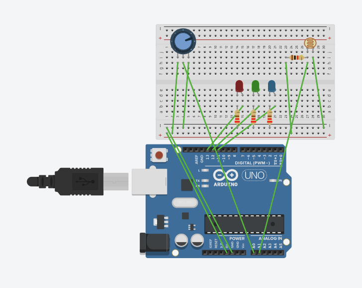

Luua nutikas öölamp, mis loeb valgustaset fototakistilt (LDR) ja muudab vastavalt sellele LED-ide heledust. Värvi (punane, roheline või sinine) saab muuta potentsiomeetriga.

Keera potentsiomeetri liugurit, et vahetada värve, ning fototakisti liugurit, et muuta ruumi heledust (ja seeläbi lambi eredust).
int PIN_RED = 13;
int PIN_GREEN = 12;
int PIN_BLUE = 11;
int PIN_POT = A0;
int PIN_LDR = A1;
void setup() {
pinMode(PIN_RED, OUTPUT);
pinMode(PIN_GREEN, OUTPUT);
pinMode(PIN_BLUE, OUTPUT);
Serial.begin(9600); // Lülitame sisse pordimonitori andurite kontrollimiseks
}
void loop() {
int potValue = analogRead(PIN_POT); // Potentsiomeeter (valib värvi)
int ldrValue = analogRead(PIN_LDR); // Fototakisti (valge/pime)
// Prindime andurite väärtused, et näha neid jadapordimonitoris (Serial Monitor)
Serial.print("Pot: ");
Serial.print(potValue);
Serial.print(" | LDR: ");
Serial.println(ldrValue);
// 1. Arvutame heleduse.
// Tinkercadis annab fototakisti pimedas tavaliselt umbes 50 ja valguses 900+.
// Muudame need väärtused heleduseks vahemikus 0 kuni 255.
int brightness = map(ldrValue, 950, 50, 255, 0);
// Kaitse: et heledus ei väljuks piiridest 0-255
if (brightness < 0) brightness = 0;
if (brightness > 255) brightness = 255;
// 2. Lülitame KÕIK valgusdioodid välja enne vajaliku sisselülitamist
analogWrite(PIN_RED, 0);
analogWrite(PIN_GREEN, 0);
analogWrite(PIN_BLUE, 0);
// 3. Valime värvi sõltuvalt potentsiomeetrist
if (potValue < 100) {
// Kui nupp on nullis — öölamp on VÄLJA LÜLITATUD (jätame kõik dioodid 0 peale)
}
else if (potValue < 400) {
// Lülitame sisse PUNASE
analogWrite(PIN_RED, brightness);
}
else if (potValue < 700) {
// Lülitame sisse ROHELISE
analogWrite(PIN_GREEN, brightness);
}
else {
// Lülitame sisse SINISE (nupp on keeratud üle 700)
analogWrite(PIN_BLUE, brightness);
}
delay(100);
}